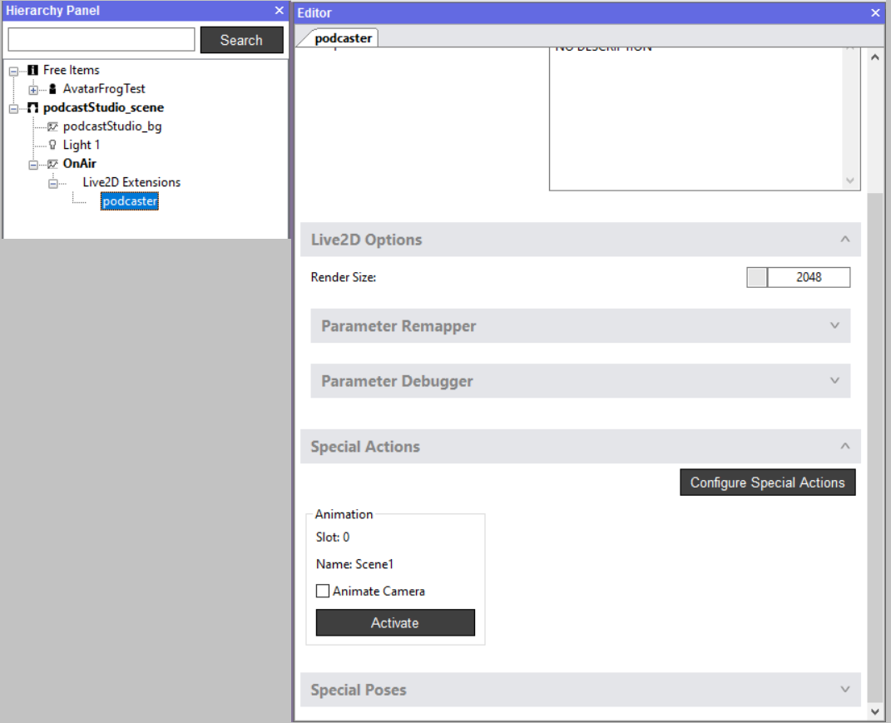

キーバインドでトリガーされたアニメーション化された要素のあるバックドロップの作成方法

これは、スタティック2D背景と同じですが、スカイボックス2Dのインポートウィンドウやシーンの「2Dオーバーレイ」アイテムで2D画像を読み込む代わりに、Live2Dモデルを選択することができます。
画像として読み込むLive2Dモデルにはどれも、階層パネル上に「Live2D拡張」のサブアイテムが表示されます。このサブアイテムのプロパティで、Live2DモデルをフルLive2Dアバターや特殊ポーズや特殊アクションのセットアップのような設定ができます。
Live2Dアバターの設定に関する詳細な情報は、こちらでご覧ください。
このようなLive2Dアセットについての詳細は、こちらのサンプルモデルを参照してください。
追記事項：
これらのLive2Dアセットは16/9のキャンバスでデザインすることを推奨します（そうでない場合、黒い線が現れることがあります）。
エディター説明書 > 表示メニュー > アスペクト比バレットで、様々なプラットフォームから、どのように見えるのかを確認できます。
どんな作品が出来上がるのか楽しみです！
推奨
キャンバスサイズは16:9を推奨します（アスペクト比）